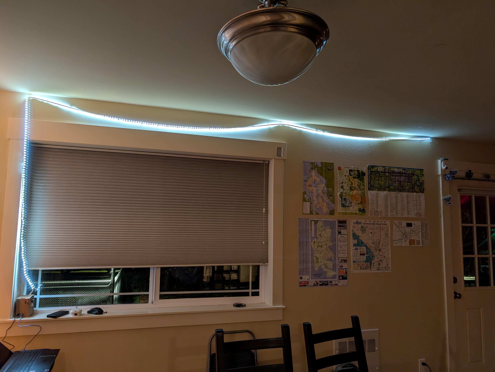
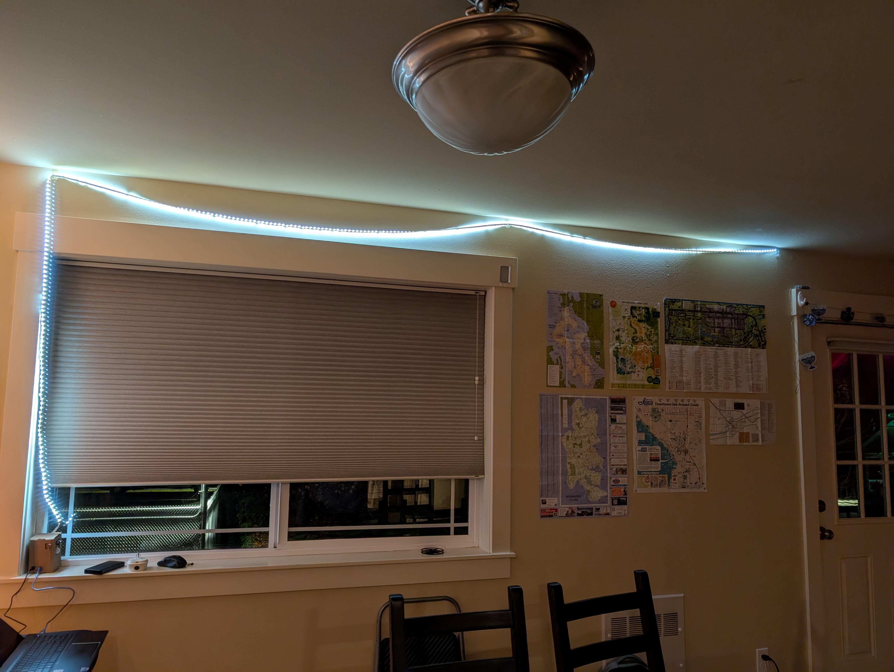
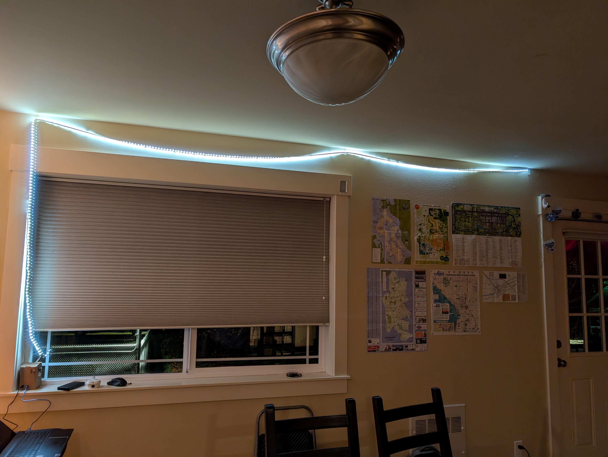
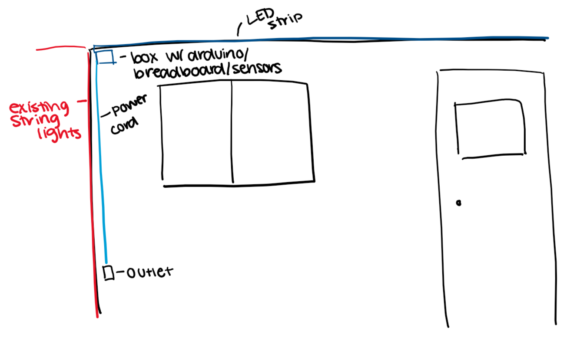
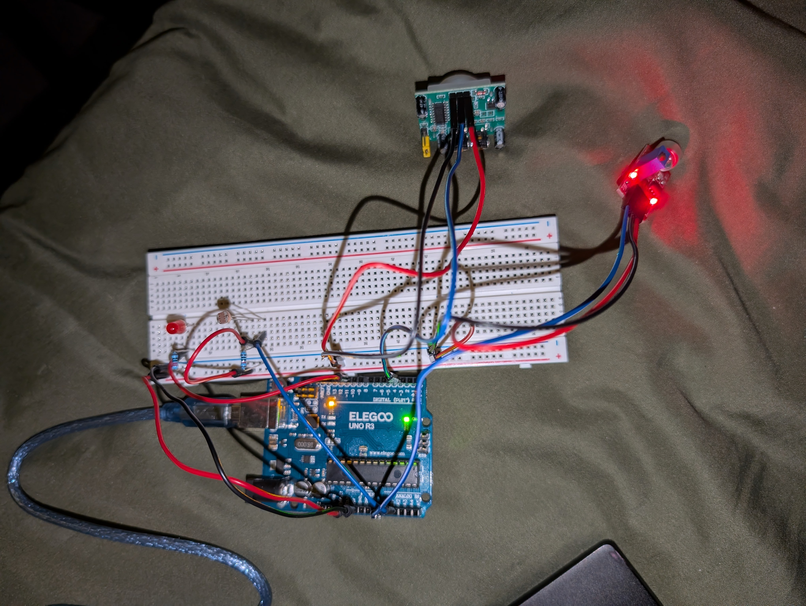
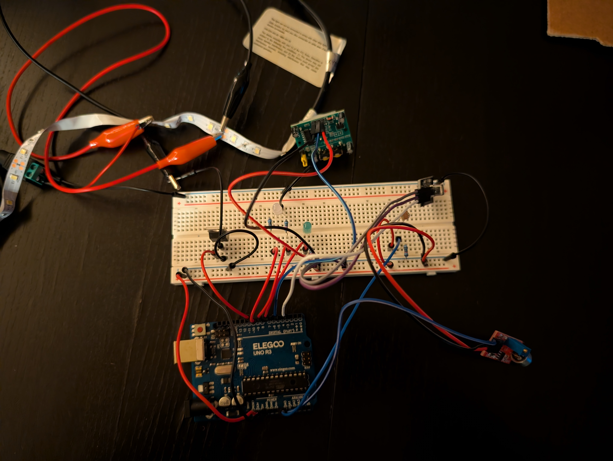
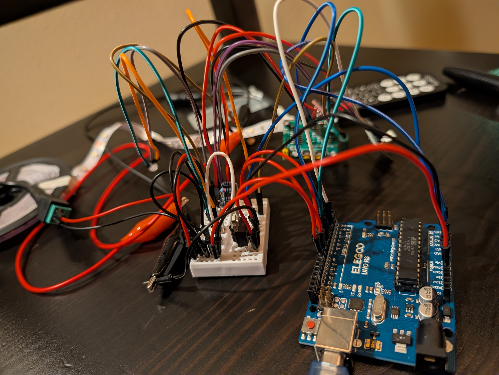
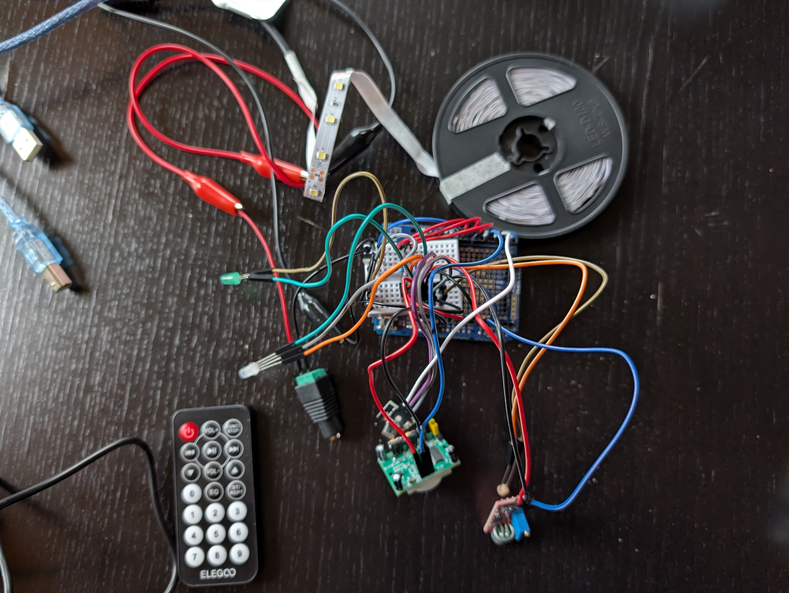

I wanted to use the LED strip and the remote control to add lights to my dining room that can be easily controlled.
The remote controls the following features:
My arduino, protoshield, breadboard, LEDs, and sensors are all placed in a box which can be mounted in the corner by the ceiling (or on the windowsill). The sensors and single LEDs are sticking out of holes in the box. The 12V power cord and the arduino power cord are plugged into an outlet in the corner below the box. The LED strip runs across the ceiling of my dining room from the box.

link: https://youtu.be/JQMOE8k5bp4
notes:
max voltage: 5 V
max current: 0.02 A
V = I × R
voltage drop: 1.8 V
5 V - 1.8 V = 3.2 V
3.2 V = 0.02 A × R
3.2 V / 0.02 A = R
voltage drop: 3.3 V
5 V - 3.3 V = 1.7 V
1.7 V = 0.02 A × R
1.7 V / 0.02 A = R
I used 220 Ω resistors for the red and green LEDs and a 100 Ω resistor for the blue LED.
1,000 Ω < R1 < 100,000 Ω
5 V × (
5 V × (
I used a 10 K Ω resistor for the photoresistor.
// include the ir remote library
#include <IRremote.h>
// PINS (assign pin numbers)
const int ledPin = 10;
const int bluePin = 9;
const int redPin = 8;
const int greenPin = 7;
const int motionPin = 5;
const int irPin = 3;
const int soundPin = A0;
const int lightPin = A1;
// IR RECEIVER (assign ir values)
const long power = 3125149440;
const long volUp = 3108437760;
const long funcStop = 3091726080;
const long re = 3141861120;
const long playPause = 3208707840;
const long skip = 3158572800;
const long down = 4161273600;
const long volDown = 3927310080;
const long up = 4127850240;
const long zero = 3910598400;
const long eq = 3860463360;
const long stRept = 4061003520;
const long one = 4077715200;
const long two = 3877175040;
const long three = 2707357440;
const long four = 4144561920;
const long five = 3810328320;
const long six = 2774204160;
const long seven = 3175284480;
const long eight = 2907897600;
const long nine = 3041591040;
// STATES
// array to store brightness based on fade mode
int brightness[100];
// array to track most recent brightness detected by photoresistor
int lightVals[200];
// the maximum brightness for the led strip
int maxBrightness;
// amount of time the lights will stay on for after motion/sound is sensed (minutes) (5-30)
int sensePause;
// speed of fade mode (0-6)
int speed;
// last value detected by motion sensor (0 or 1)
int motionVal;
// last value detected by sound sensor
int soundVal;
// last value detected by photoresistor
int lightVal;
// last time motion was sensed
unsigned long senseTimer;
// to track the current place in the speed of the fade modes
int a;
// to track the current place in the brightness array
int b;
// to track the current place in the lightsVal array
int c;
// whether or not the power is on
bool powerOn;
// whether or not the led strip is on
bool run;
// whether or not the motion sensor setting is on
bool motionOn;
// whether or not the sound sensor setting is on
bool soundOn;
// whether or not the light sensor setting is on
bool lightOn;// SETUP (run once at beginning)
void setup() {
// set led pin modes to output
pinMode(ledPin, OUTPUT);
pinMode(redPin, OUTPUT);
pinMode(bluePin, OUTPUT);
pinMode(greenPin, OUTPUT);
// set sensor pin modes to input
pinMode(motionPin, INPUT);
pinMode(soundPin, INPUT);
pinMode(lightPin, INPUT);
IrReceiver.begin(irPin, ENABLE_LED_FEEDBACK);
}
// LOOP (loop infinitely)
void loop() {
// check if any buttons on the remote were pressed
if (IrReceiver.decode()) {
// run decode()
decode();
}
// check if motion sensor setting is on
if (motionOn) {
// run soundSense()
motionSense();
}
// check if sound sensor setting is on
if (soundOn) {
// run soundSense()
soundSense();
}
// check if light sensor setting is on
if (lightOn) {
// run lightSense()
lightSense();
}
// run setBrightness()
setBrightness();
// wait 10 ms
delay(10);
}determines which button was pressed; updates variables and/or runs functions based on button pressed
// CHECK IR RECEIVER
void decode() {
// get value for button pressed
long button = IrReceiver.decodedIRData.decodedRawData;
// check if power is already on
if (powerOn) {
// check which button was pressed
if (button == power) {
// set powerOn to false
powerOn = false;
// set run to false
run = false;
// set led brightness to off
digitalWrite(redPin, LOW);
digitalWrite(bluePin, LOW);
digitalWrite(greenPin, LOW);
// iterate through brightness, set all values to 0
for (int i = 0; i < 100; i++) {
brightness[i] = 0;
}
} else if (button == volUp) {
// increase sensePause by 5 (max 30)
sensePause = min(30, sensePause + 5);
} else if (button == funcStop) {
// check if the light sensor setting is on
if (lightOn) {
// turn off light sensor setting
lightOn = false;
// turn green led off
digitalWrite(greenPin, LOW);
} else {
// turn light sensor setting on
lightOn = true;
}
} else if (button == re) {
// increase speed by 1 (max 6)
speed = min(6, speed + 1);
} else if (button == playPause) {
// check if run is true
if (run) {
// set run to false
run = false;
} else {
// set run to true
run = true;
}
} else if (button == skip) {
// decrease speed by 1 (min 0)
speed = max(0, speed - 1 );
} else if (button == down) {
// decrease maxBrightness by 16 (min 0)
maxBrightness = max(0, maxBrightness - 16);
} else if (button == volDown) {
// decrease sensePause by 5 (min 5)
sensePause = max(5, sensePause - 5);
} else if (button == up) {
// increase maxBrightness by 16 (max 255)
maxBrightness = min(255, maxBrightness + 16);
} else if (button == zero) {
// set fade mode to 0
fade(0);
} else if (button == eq) {
// check if sound sensor setting is on
if (soundOn) {
// turn off sound sensor setting
soundOn = false;
// turn blue led off
digitalWrite(bluePin, LOW);
} else {
// turn on sound sensor setting
soundOn = true;
}
} else if (button == stRept) {
// check if motion sensor setting is on
if (motionOn) {
// turn motion sensor setting off
motionOn = false;
// turn red led off
digitalWrite(redPin, LOW);
} else {
// turn motion sensor setting off
motionOn = true;
}
} else if (button == one) {
// set fade mode to 1
fade(1);
} else if (button == two) {
// set fade mode to 2
fade(2);
} else if (button == three) {
// set fade mode to 3
fade(3);
} else if (button == four) {
// set fade mode to 4
fade(4);
} else if (button == five) {
// set fade mode to 5
fade(5);
} else if (button == six) {
// set fade mode to 6
fade(6);
} else if (button == seven) {
// set fade mode to 7
fade(7);
} else if (button == eight) {
// set fade mode to 8
fade(8);
} else if (button == nine) {
// set fade mode to 9
fade(9);
}
} else {
// if power button was pressed
if (button == power) {
// run reset()
reset();
}
}
// continue checking for buttons pressed
IrReceiver.resume();
}
// RESET (reset all global variables to default & turn power on)
void reset() {
maxBrightness = 50;
sensePause = 5;
speed = 2;
senseTimer = 0;
a = 0;
b = 0;
c = 0;
powerOn = true;
run = true;
motionOn = false;
soundOn = false;
lightOn = false;
fade(0);
}// LIGHT SENSOR
void lightSense() {
// turn green led on
digitalWrite(greenPin, HIGH);
// get value from light sensor
int thisVal = analogRead(lightPin);
// set total to 0
long total = 0;
// add current value to lightVals array
lightVals[c] = thisVal;
// iterate through thisVal and total all ints
for (int i = 0; i < 200; i++) {
total += lightVals[i];
}
// set lightVal to average of all ints in lightVals
lightVal = total/200;
// increase c by 1 (to keep track of current place in lightVals array)
if (c >= 200) {
c = 0;
} else {
c++;
}
}
// SOUND SENSOR
void soundSense() {
// turn blue led on
digitalWrite(bluePin, HIGH);
// get value from sound sensor
soundVal = analogRead(soundPin);
// get current time
unsigned long mil = millis();
// check if sound is detected
if (soundVal >= 200) {
// reset senseTimer (to current time)
senseTimer = mil;
// set run to true
run = true;
}
// check if it has been long enough since last sound detected
if (mil - senseTimer >= sensePause * 60000) {
// set run to false
run = false;
} else if (mil - senseTimer >= (sensePause + 10) * 60000) {
// set power on to false
powerOn = false;
}
}
// MOTION SENSOR
void motionSense() {
// turn red led on
digitalWrite(redPin, HIGH);
// get value from motion sensor
motionVal = digitalRead(motionPin);
// get current time
unsigned long mil = millis();
// check if motion is detected
if (motionVal == 1) {
// reset senseTimer (to current time)
senseTimer = mil;
// set run to true
run = true;
}
// check if it has been long enough since last sound detected
if (mil - senseTimer >= sensePause * 60000) {
// set run to false
run = false;
} else if (mil - senseTimer >= (sensePause + 10) * 60000) {
// set power on to false
powerOn = false;
}
}updates brightness array based on mode number provided
// FADE MODE (fill brightness array with ints (0-100) based on the mode number)
void fade(int mode) {
if (mode == 0) {
for (int i = 0; i < 100; i++) {
brightness[i] = 100;
}
} else if (mode == 1) {
for (int i = 0; i < 100; i++) {
brightness[i] = i;
}
} else if (mode == 2) {
for (int i = 0; i < 100; i++) {
brightness[i] = 99 - i;
}
} else if (mode == 3) {
for (int i = 0; i < 100; i++) {
brightness[i] = (int)(50.0 * (1.0 - cos(i * 2.0 * PI / 99.0)));
}
} else if (mode == 4) {
for (int i = 0; i < 100; i++) {
if (i < 50) {
brightness[i] = i * 2;
} else {
brightness[i] = 100 - ((i - 50) * 2);
}
}
} else if (mode == 5) {
for (int i = 0; i < 100; i++) {
if (i % 2 == 0) {
brightness[i] = 100;
} else {
brightness[i] = 0;
}
}
} else if (mode == 6) {
for (int i = 0; i < 100; i++) {
brightness[i] = (4 - (i / 25)) * 25;
}
} else if (mode == 7) {
const int flash_step = 50;
for (int i = 0; i < 100; i++) {
if (i == flash_step) {
brightness[i] = 100;
} else {
brightness[i] = 0;
}
}
} else if (mode == 8) {
for (int i = 0; i < 100; i++) {
brightness[i] = random(70, 101);
}
} else if (mode == 9) {
for (int i = 0; i < 100; i++) {
float normalized = i / 99.0;
brightness[i] = (int)(pow(normalized, 3.0) * 100.0);
}
}
}sets current brightness based on fade mode (brightness array), maxBrightness, lightOn, run, and speed
// SET BRIGHTNESS
void setBrightness() {
// map brightness based on current place in brightness array and maxBrightness
int thisBrightness = map(brightness[b], 0, 99, 0, maxBrightness);
// check if light sensor setting is on
if (lightOn) {
// remap brightness to decrease if more light is sensed and vice versa
thisBrightness = map(lightVal, 500, 0, 0, thisBrightness);
}
// ensure brightness is within possible brightness
thisBrightness = constrain(thisBrightness, 0, 255);
// check if run is false
if (!run) {
// set brightness to 0
thisBrightness = 0;
}
// increase a and b based on speed and length of brightness array
if (a >= speed) {
if (b >= 100) {
b = 0;
} else {
b++;
}
a = 0;
} else {
a++;
}
// set brightness to the led strip
analogWrite(ledPin, thisBrightness);
}My original goal was to make lights that would be placed on the ceiling in my dining room that could be controlled by a remote.
To start out, I wired all the sensors and made sure I could make them all work how I needed them to. I used a single LED to test the output of the sensors.
Then, I replaced the single LED with the LED strip and the other LEDs that I would use to show which settings are on. I also added the IR receiver to control the LED strip.
After I wrote all the code and stuff I attempted moving everything to the tiny breadboard. I did not have much confidence in it all to fit but it ended up fitting somehow and becoming even more disgusting looking.
After realizing that it all would actually fit on the tiny breadboard, I took it apart and redid all the wiring, this time with the protoshield, so that it fit on top of the arduino instead of next to it so that the box could be smaller.
Then, I measured the dimensions and came up with a design for the cardboard box. I forced my boyfriend to cut the cardboard for me. I also got some shorter wires so that the wires connecting to the sensors and LEDs didn't have to stick up so much so that it would all fit better in the box. I cut holes in the sides of the box for the power cords, sensors, and LEDs.
After realizing I don't have a long enough cord to power the arduino I decided not to put the box on the ceiling. It fits on the windowsill and I can plug it into a portable charger to power it instead of getting a long cord. If I decide to get a longer cord later I'll put it on the ceiling.
I used AI to come up with the 9 fade modes (to fill the brightness array).